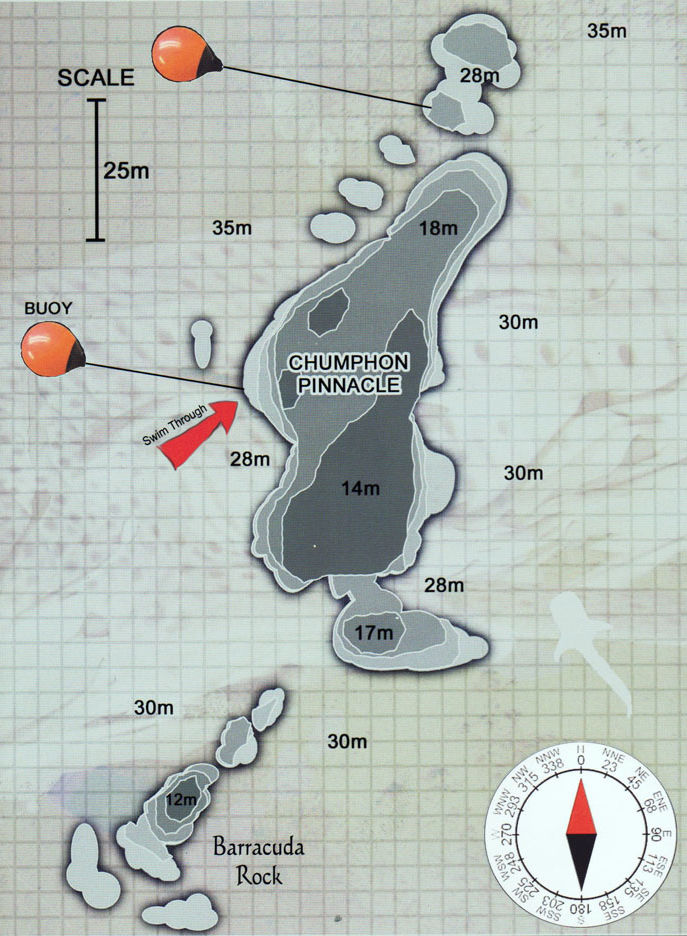
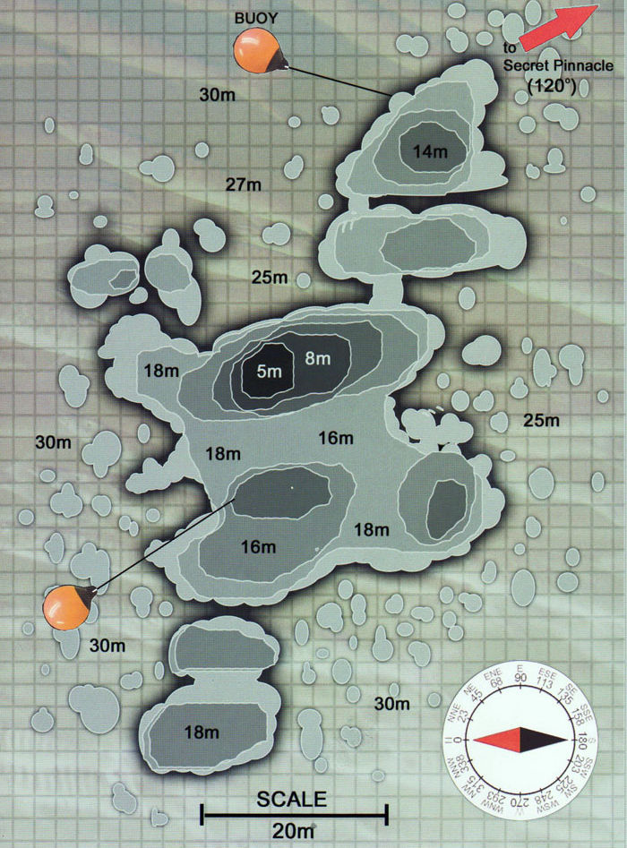
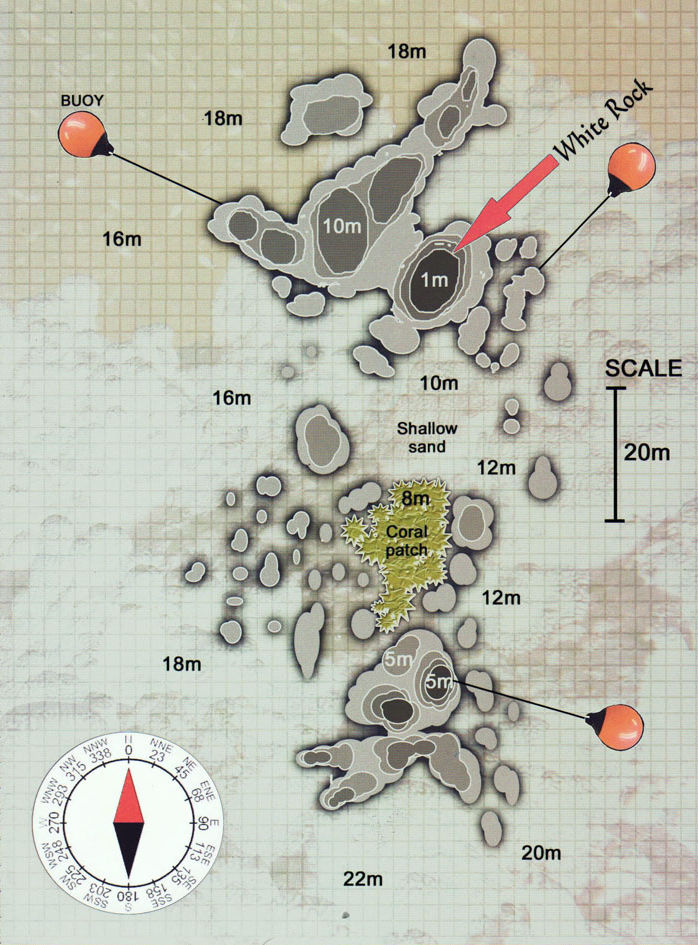
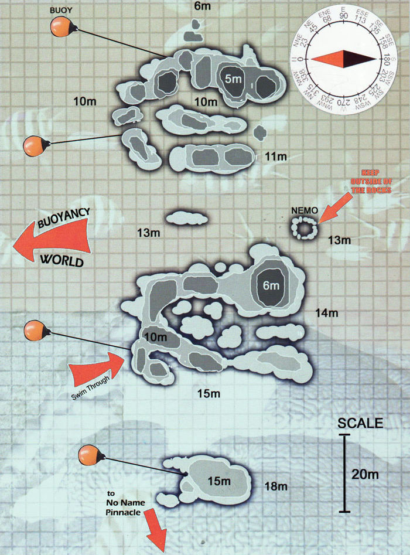
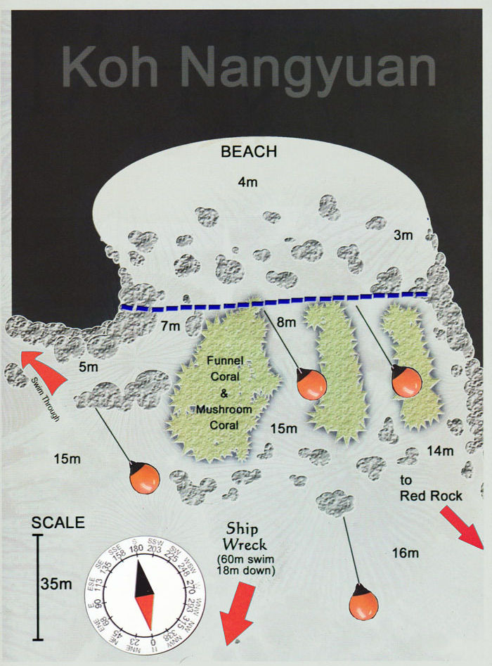
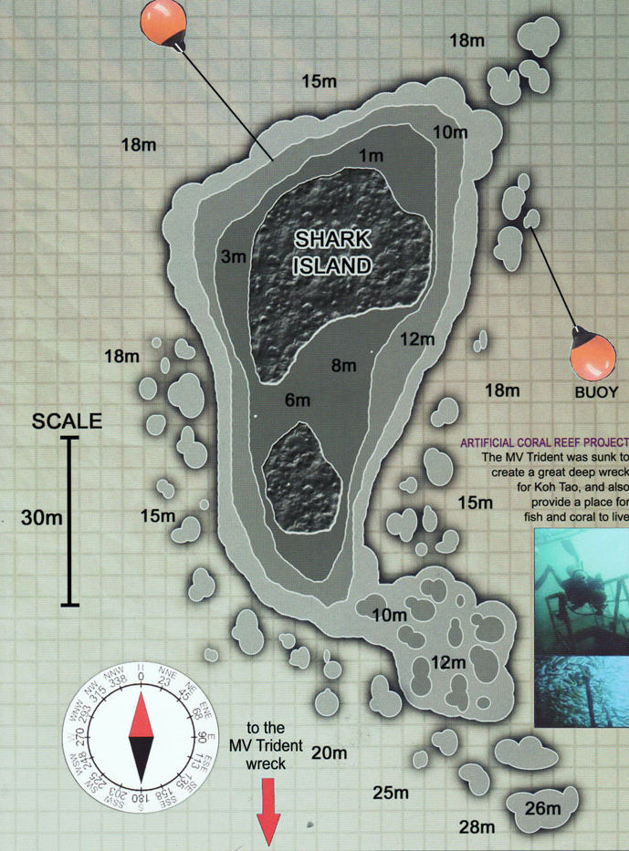

Мы выбираем лучшие сайты в зависимости от условий, уровня подготовки группы и текущей морской жизни

Король дайв-сайтов Ко Тао. Группа массивных гранитных скал, поднимающихся с 36 метров до 14 метров от поверхности. Здесь водятся огромные стаи большеглазого тревалли, создающие «стену» из серебристых рыб. Китовые акулы появляются регулярно в сезон (март—сентябрь). На глубине обитают рифовые акулы, групперы-гиганты и скаты. Мощные течения приносят питательные вещества, привлекая пелагических хищников.
Глубина: 14-36м
Продвинутый
Китовые акулы

Семь подводных скал к юго-западу от Ко Тао, покрытых яркими анемонами и мягкими кораллами. Вершина на 6 метрах, дно — 26 метров. Это один из самых фотогеничных дайв-сайтов в регионе. Розовые и пурпурные анемоны с рыбами-клоунами, огромные мурены, выглядывающие из расщелин, стаи барракуд на глубине. В сезон (апрель—июнь) здесь тоже можно встретить китовых акул.
Глубина: 6-26м
Средний
Анемоны

Самый посещаемый дайв-сайт Ко Тао — и не зря. Два крупных валуна с коралловыми садами на глубине от 2 до 22 метров. Идеальное место для ночного дайвинга — здесь охотятся рыбы-ежи, крабы, креветки и осьминоги. Днём можно увидеть черепах, рыб-ангелов, рыб-бабочек, спинорогов и зелёных мурен. Подходит для дайверов всех уровней. Течения обычно слабые.
Глубина: 2-22м
Новичок+
Черепахи
Ночной дайвинг

Два подводных валуна между островами Нанг Юань и Ко Тао. Глубина от 2 до 18 метров. «Близнецы» — это подводный сад с невероятным разнообразием кораллов: столовые, оленьи рога, мозговые, огненные. Между валунами — песчаное дно, где часто отдыхают скаты и рифовые акулы. Отличная видимость, слабые течения, яркие краски — идеально для подводной фотографии и обучения.
Глубина: 2-18м
Новичок
Кораллы
Фотография

Коралловый сад у подножия острова Нанг Юань. Пологий склон с глубиной от 2 до 16 метров, усеянный твёрдыми кораллами и анемонами. Идеально для снорклинга и начинающих дайверов. Здесь живут стаи рыб-бабочек, рыбы-клоуны в анемонах, голубые хирурги, рыбы-попугаи и трубкозубы. Спокойная вода, отличная видимость — лучшее место для первого погружения или расслабленного дрейфа над рифом.
Глубина: 2-16м
Новичок
Снорклинг

Скалистый островок в форме акульего плавника у южной оконечности Ко Тао. Под водой — крутые склоны, покрытые мягкими кораллами, горгонариями и губками. Глубина от 2 до 22 метров. Восточная сторона — стена с трещинами, где прячутся мурены и крабы. Западная — более пологий склон с садами из анемонов. Одно из лучших мест для встречи с морскими черепахами — бисса и зелёная черепаха кормятся здесь регулярно.
Глубина: 2-22м
Средний
Черепахи
Горгонарии